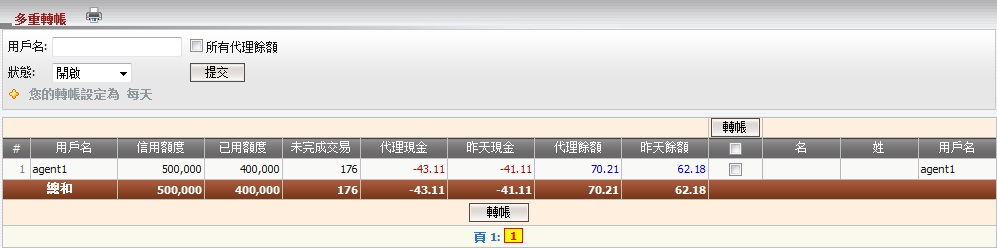

轉賬
定義:
轉賬是指必須從發送人轉移至接收人的金錢數額以達到輸/贏付款目的。我們有兩種轉賬類型: 單一轉賬及多重轉賬。若您被允許在當日轉賬那您才能進行轉賬, 這就是所謂的轉賬條件包括: 每日轉賬及每周轉賬(週一 - 週日)。
注:
- 將出現一則訊息通知您被允許作出轉賬的日期。
- 轉賬交易必須在中午12時至晚上11:59時完成 (GMT +8)。
- 轉賬只能進行於戶口狀態為: 開啟, 關閉, 暫停及禁用。
- 昨天餘額> 0 --> 總代理將支付於代理。
- 昨天餘額< 0 --> 總代理將接收於代理。
- 子賬戶必須被授予轉賬權限才能進行轉賬。
- 要編輯代理的轉賬設定, 總代理必須被允許每日轉賬。

圖 1.1
定義:
- 信用額度: 最初給予每個代理的信用額度。
- 已用額度: 每個代理最初給予所有會員的信用額度。
- 未完成交易: 代理根據他/她的佔成, 在會員投注額的分擔於進行中/等待中的注單。
- 代理現金: 代理輸/贏總額。
- 昨天现金余额: 代理输/赢总额至昨日。
- 代理餘額: 總代理將接收或支付予代理的總數額。
- 昨天餘額: 總代理將接收或支付予代理的總數額至昨天。
如何理解報告:
從上圖中, agent1最初被給予500,000, 他/她的分擔根據他/她的佔成於進行中/等待中的注單為176, 目前他/她將向總代理收取62.18和代理總餘額 (包括今日輸/贏) 為70.21。
如何轉賬:
點擊各代理的昨天餘額額以進行轉賬或選取 "轉賬" 列, 並點擊 "轉賬" 按鈕對所有代理的昨天餘額進行多重轉賬。